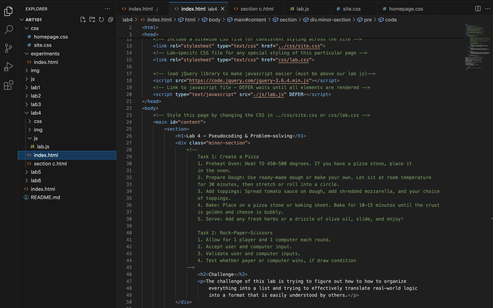
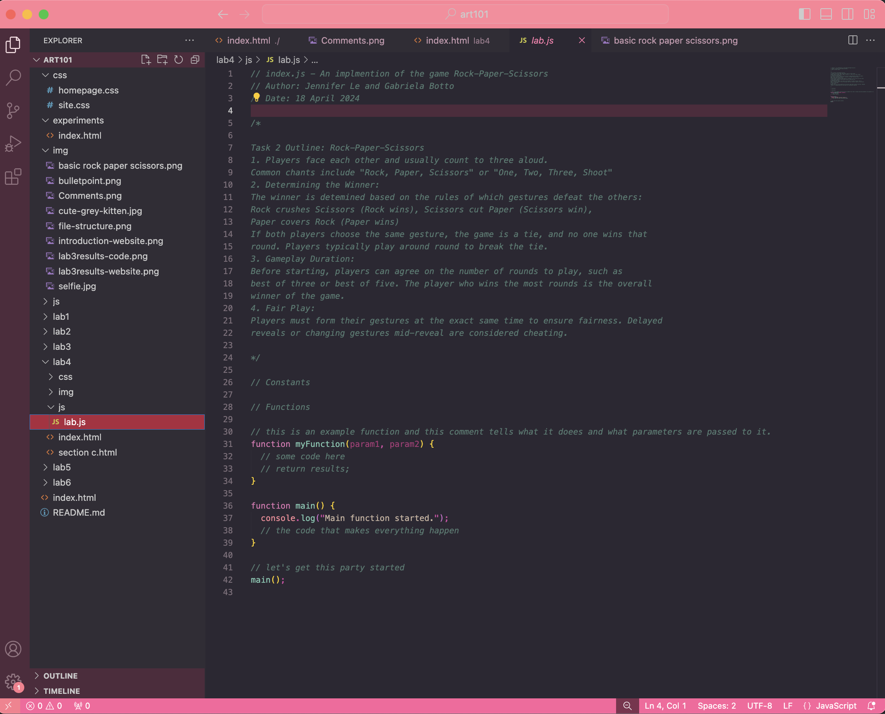
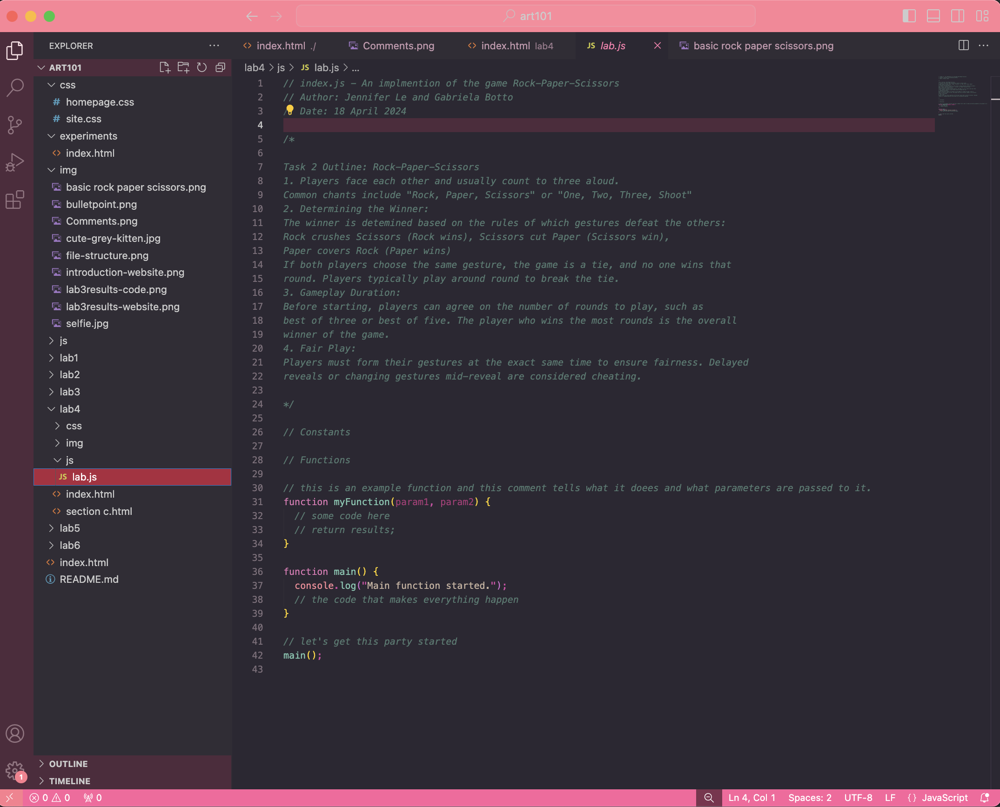

Lab 4 - Pseudocoding & Problem-solving
Challenge
The challenge of this lab is trying to figure out how to how to organize everything into a list and trying to effectively translate real-world logic into a format that is easily understood by others.
Problems
I had some issues of formatting the indents in the index.html file so it would look presentable on the webpage. We were able to fix it by checking our webpage and refreshing the browser so it looks aesthetically pleasing.
Reflection
This assignment went smoothly and it was fairly easy to do. After doing this lab, I realized how important Pseudocode is because it serves as a bridge between problem-solving and actually coding. I feel like it helps in planning and designing algorithims while facilicating communucation with other team members.
Results/Pseudocode Screenshots
Task 1: Create a Pizza
1. Preheat Oven: Heat TO 450-500 degrees. If you have a pizza stone, place it
in the oven.
2. Prepare Dough: Use ready-made dough or make your own. Let sit at room
temperature.
for 30 minutes, then stretch or roll into a circle.
3. Add toppings: Spread tomato sauce on dough, add shredded mozzarella,
and your choice of toppings.
4. Bake: Place on a pizza stone or baking sheet. Bake for 10-15 minutes
until the crust
is golden and cheese is bubbly.
5. Serve: Add any fresh herbs or a drizzle of olive oil, slide, and enjoy!

Task 2: Rock-Paper-Scissors
1. Allow for 1 player and 1 computer each round.
2. Accept user and computer input.
3. Validate user and computer inputs.
4. Test whether payer or computer wins, if draw condition.
 Task 2 Outline: Rock-Paper-Scissors
1. Players face each other and usually count to three aloud.
Common chants include "Rock, Paper, Scissors" or "One, Two, Three, Shoot"
2. Determining the Winner:
The winner is detemined based on the rules of which gestures defeat the others:
Rock crushes Scissors (Rock wins), Scissors cut Paper (Scissors win),
Paper covers Rock (Paper wins)
If both players choose the same gesture, the game is a tie, and no one wins that
round. Players typically play around round to break the tie.
3. Gameplay Duration:
Before starting, players can agree on the number of rounds to play, such as
best of three or best of five. The player who wins the most rounds is the overall
winner of the game.
4. Fair Play:
Players must form their gestures at the exact same time to ensure fairness. Delayed
reveals or changing gestures mid-reveal are considered cheating.

Task 2 Outline: Rock-Paper-Scissors
1. Players face each other and usually count to three aloud.
Common chants include "Rock, Paper, Scissors" or "One, Two, Three, Shoot"
2. Determining the Winner:
The winner is detemined based on the rules of which gestures defeat the others:
Rock crushes Scissors (Rock wins), Scissors cut Paper (Scissors win),
Paper covers Rock (Paper wins)
If both players choose the same gesture, the game is a tie, and no one wins that
round. Players typically play around round to break the tie.
3. Gameplay Duration:
Before starting, players can agree on the number of rounds to play, such as
best of three or best of five. The player who wins the most rounds is the overall
winner of the game.
4. Fair Play:
Players must form their gestures at the exact same time to ensure fairness. Delayed
reveals or changing gestures mid-reveal are considered cheating.
